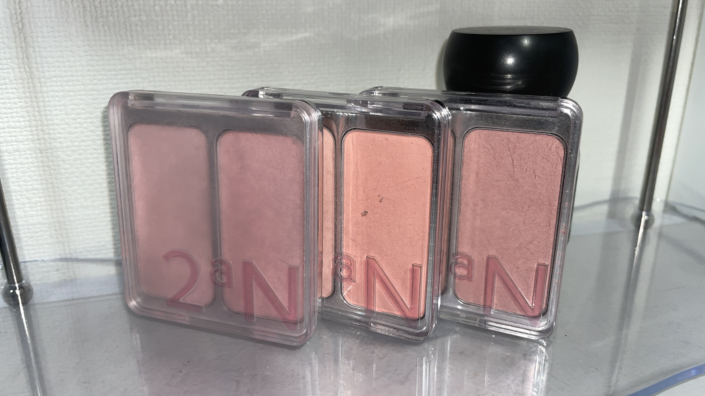
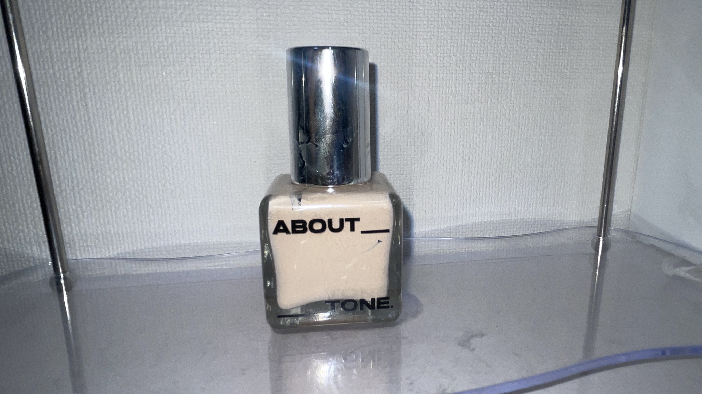
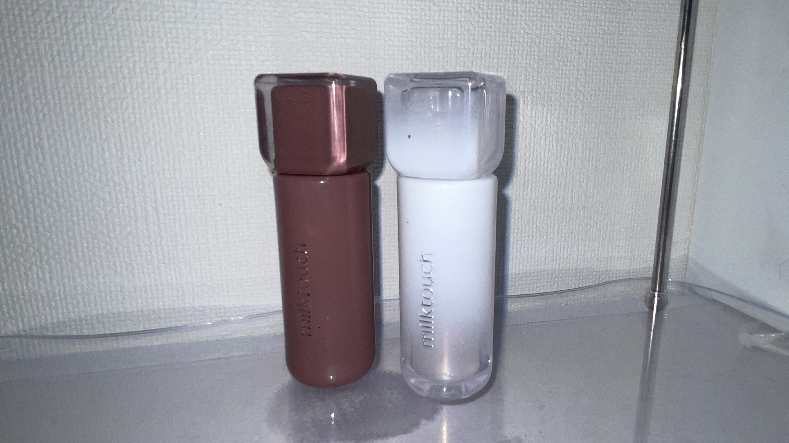
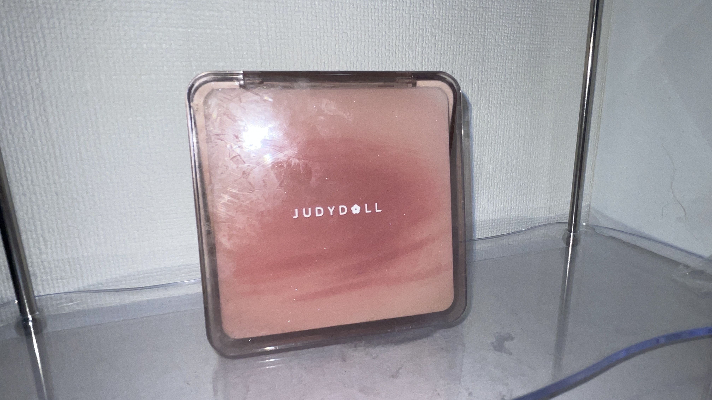
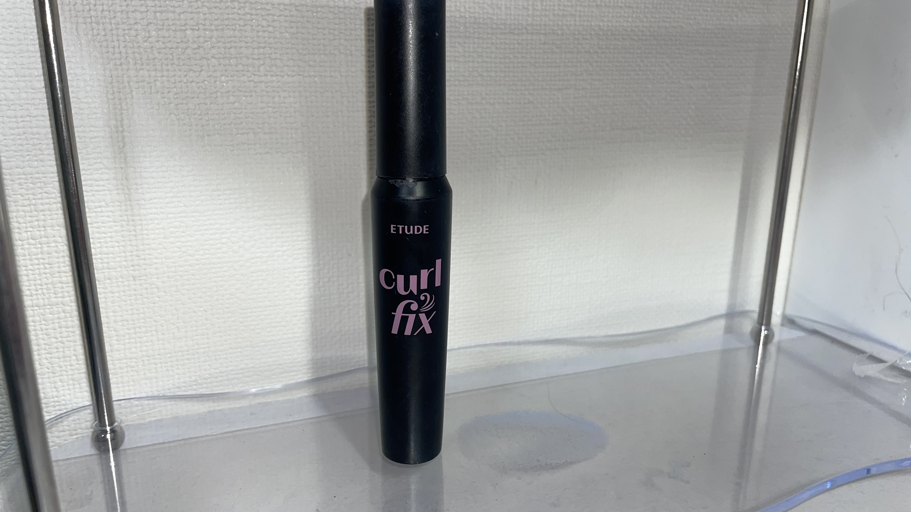

ランキング
♡ Contents ♡
自分にあったコスメを選ぶためのポイントをまとめました。
第１位 2an チーク

自然な血色感が出て、どんなメイクにも合わせやすいお気に入りのチークです。発色が良く、毎日使っています。
第2位 about tone ファンデーション

カバー力が高く、自然な艶肌に仕上がります。長時間崩れにくく、とてもお気に入りです。
第3位 milktouch リップ

発色がきれいで、乾燥しにくいリップです。普段使いしやすく、何度もリピートしています。
第4位 judydoll ノーズシャドウ

自然な陰影を作ることができるノーズシャドウです。濃くなりすぎず、初心者でも使いやすいので毎日のメイクで愛用しています。
第5位 ETUDE マスカラ

値段だけでなく、内容量や使用回数も考えて選ぶとお得です。自分が続けて使いやすい価格帯のコスメを選びましょう
殿堂入り 2an チーク
何度もリピートしている一番のお気に入りのコスメです。自然な血色感と発色の良さが魅力で、どんなメイクにも合わせやすいため、殿堂入りに選びました。